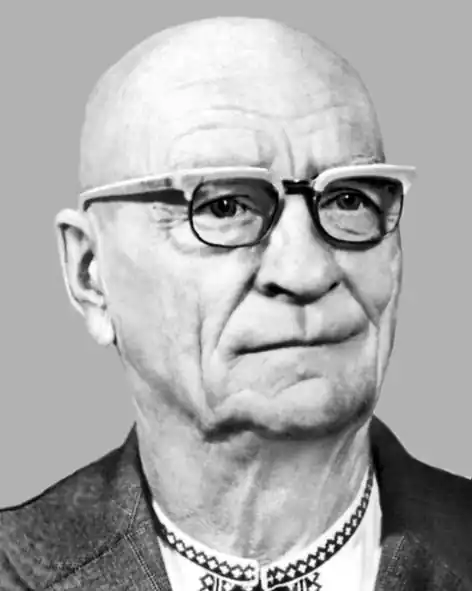

Народився 13 січня 1900 року в селі Плоске (нині Решетилівського району Полтавської області) в родині селянина-бідняка. Закінчив церковноприходську школу, навчався в земському двокласному училищі.
З 12 років пішов у найми. У 1917 році склав екстерном іспити за чотири класи гімназії. Був сторожем у сільській аптеці, служив у міліції в Полтаві.
У період громадянської війни в Російській імперії та у часи боротьби за існування Української Народної Республіки спочатку був у повстанському загоні. 1918 року схоплений кайзерівськими окупантами й відданий до воєнно-польового суду. Звільнений під час наступу Червоної Армії. Був членом партії боротьбистів. Брав участь у боях з денікінцями, потрапив до них у полон. Знову був звільнений і вступив до Червоної Армії (разом з Володимиром Сосюрою). Затим воював у війську УНР. Війна закінчилась для нього у таборі біля Познані (Польща), де перебував у 1920—1921 роках. Після повернення додому вступив до комітету незаможників. Був секретарем сільради. Навчався на курсах інструкторів-лекторів ТСОАВІАХІМу, виступав з лекціями від цього товариства. В 1926—1928 роках навчався в Полтавському інституті народної освіти (заочно). Друкуватися почав 1926 року — тоді з легкої руки Остапа Вишні в газеті "Селянська правда" була вміщена його гумореска "Містки та доріженьки". Друкував гумористичні оповідання та фейлетони в газеті "Більшовик Полтавщини", журналах "Червоний Перець", "Плуг", "Червоний шлях", "Нова громада" ("Соціалістична громада"), "Молодий більшовик" та інших часописах. 1928 року став штатним фейлетоністом газети "Більшовик Полтавщини". Перша книга — збірка гумористичних і сатиричних повістей "Індивідуальна техніка" (Харків, 1929), друга — "Колективом подолаємо" (Полтава, 1930). 6 жовтня 1934 року заарештований органами НКВС у справі "Контрреволюційної боротьбистської організації". У київській Лук'янівській в'язниці зустрівся з полтавськими приятелями Майфетом і Ванченком. 28 березня 1935 року виїзною сесією Військової колеґії Верховного Суду СРСР засуджений до десяти років таборів. Відбувати покарання засланий до Магадана. Там він працював вибійником, бурильником, гірничим майстром, плановиком-економістом на гірничо-промислових підприємствах Дальбуду. Звільнений 1947 року, але без права повернення в Україну, жив у Якутії. Там у 1950 році заарештований удруге і повернений у Нагаєво поблизу Магадана. 4 липня 1956 року судово-слідчу справу його було припинено за відсутністю складу злочину. Після реабілітації повернувся на батьківщину, до рідної Полтави. Був відновлений у рядах СПУ, повністю поринув у літературну роботу. Видрукував у журналі "Прапор" автобіографічну, написану з іронічним усміхом, повість "Як мене купали й сповивали" (1957), видав збірки гумору та сатири "Кутя з медом", "Гуморески" (1960), "І не кажіть, і не говоріть" (1962), "Коти й котячі хвости" (1964), "Директиви і корективи" (1965), "Попав пальцем в небо" (1966), "Всякого бувало…" (1967), "Чарівні місця на Ворсклі" (1968), "Згадую й розгадую" (1970), "Пухові подушки" (1971), "Отак, прямо і прямо" (1976), "Кислі яблука" (1978), "На що ви натякаєте?…" (1978), "Як воно засівалося" (1979), "Гостріше гостріть пера" (1983) та інші. Його творчий доробок поповнився сатирико-гумористичними повістями "Хрестоносці" та "Превелебні свистуни, або Смішні, чудні й сумні пригоди сільського хлоп'яка Василя Черпака", автобіографічною оповіддю "Чому я не сокіл?..", публіцистичними статтями з проблем розвитку української мови, збереження історико-культурної спадщини рідного народу. Помер у Полтаві на 86-му році життя 25 липня 1985 року.